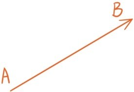
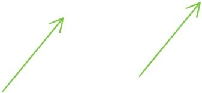

——一种既有大小又有方向的量
我们在第五章讲过，每个实数对(a,b)不但可以表示平面上的点，还可以看成是平面的一种平移运动，一种有大小，有方向的量。
高中物理中的力、速度等概念，也是既有大小，又有方向。为此我们引入平面向量的概念。平面向量，是指平面上既有大小又有方向的量。向量一般是用有向线段表示，其中点A和点B分别是有向线段的起点和终点。的长度表示向量的大小，称为向量的模，记作。

作为一种既有大小又有方向的量，向量是完全由它的长度和方向决定的，这是向量最基本的性质。

比如上图两个向量，虽然起点和终点不同，但它们的长度和方向都是相同，所以这两个向量是相等的，是同一个向量。不同的有向线段可以表示同一个向量，就和与 是表示同一个分数一样。
接下来要介绍一个特殊的向量：起点和终点重合的向量，或者说，长度为0的向量，我们称这个向量为零向量，记作 。需要特别注意的是，零向量的方向是不定的，也就是说它的方向可以是任意的。